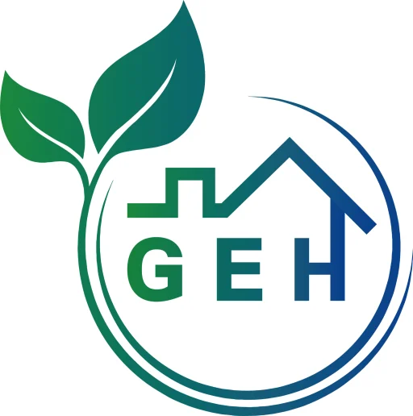

PUBLICATIONS
Publications
Publications are organized by year. DOI links are displayed inline, and year/month metadata can be recorded together.

GEH LabGreenhouse & Environmental Horticulture LabPublications are organized by year. DOI links are displayed inline, and year/month metadata can be recorded together.